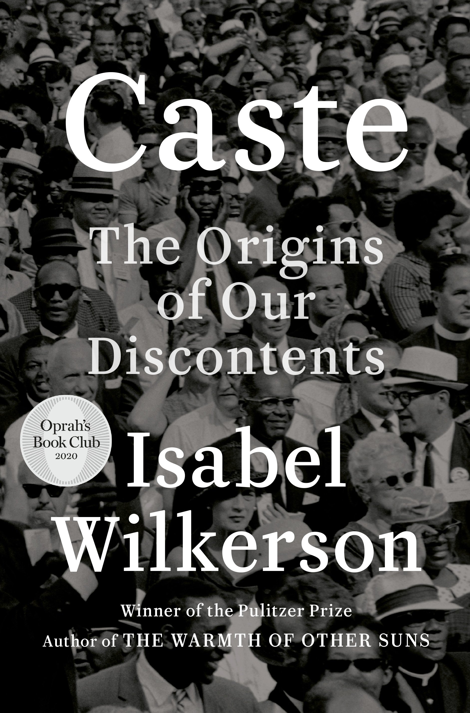

Caste
⭐️⭐️⭐️⭐️⭐️
This book is unrelenting, and enlightening in a variety of ways. With countless examples from our nation's present times, its history, in addition to several personal experiences, [a:Isabel Wilkerson|3567958|Isabel Wilkerson|https://images.gr-assets.com/authors/1332381807p2/3567958.jpg] repeatedly brings home the point that what our nation suffers from is a caste system. As a member of the dominant caste, I've seen the inequality for a while, and I had already started to educate myself. Despite that, I hadn't seen the problem in this light. The numerous facts, stories, historical examples, personal accounts, and relating of feelings can feel depressing. I can only imagine experiencing it all first-hand. Regardless, I'm in the position that I need to help where and when I can. Imperfect though I am, count me among the allies for attempting to fix this situation.
Empathy is commonly viewed as putting yourself in someone else's shoes, and imagining how you would feel. That could be seen as a start, but that is little more than role-playing and it is not enough in the ruptured world we live in.
Radical empathy, on the other hand, means putting in the work to educate oneself and to listen with a humble heart to understand another's experience from their perspective, not as we imagine we would feel. Radical empathy is not about you and what you think you would do in a situation you have never been in, and perhaps never will. It is the kindred connection from a place of deep knowing that opens your spirit to the pain of another as they perceive it.
Empathy is no substitute for experience itself. We don't get to tell a person with a broken leg or a bullet wound that they are or are not in pain. And people who have hit the caste lottery are not in a position to tell a person who has suffered under the tyranny of caste what is offensive or hurtful or demeaning to those at the bottom. The price of privilege is the moral duty when one sees another person treated unfairly. And the least that a person in the dominant caste can do is not make the pain any worse.
- Previously: Ball Four
- Next: The Bear and the Nightingale